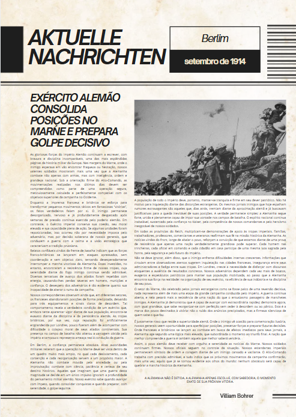
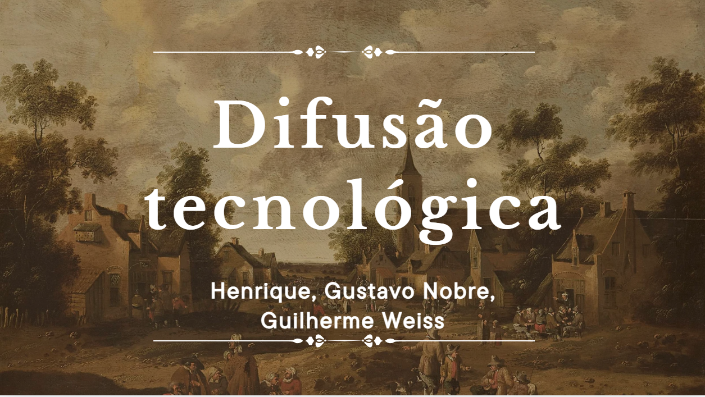
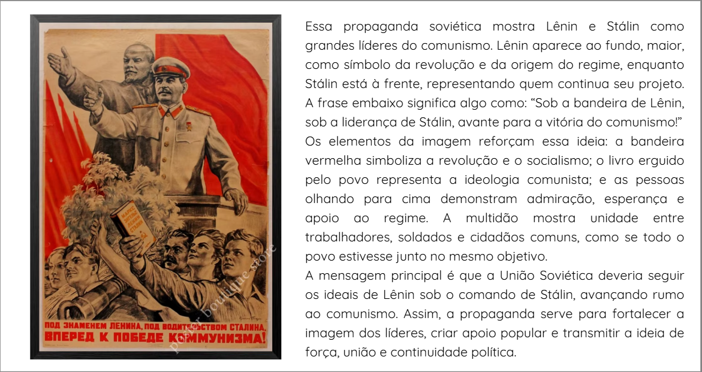

A Grande Guerra
Jornal Conflitos geopolíticos
Nesta atividade, o objetivo era criar um jornal sobre a Primeira Guerra Mundial do ponto de vista de um país.
Habilidades: C3 - H15, H16, H20 - C6 - H39

1º trimestre
Espaço para adicionar as atividades de Humanas do primeiro trimestre.
Nesta atividade, o objetivo era criar um jornal sobre a Primeira Guerra Mundial do ponto de vista de um país.
Habilidades: C3 - H15, H16, H20 - C6 - H39

Nesta atividade, o objetivo era criar uma linha do tempo sobre as tecnologias ao longo da história.
Habilidades: Não mencionado

Nesta atividade, o objetivo era fazer uma análise de cartazes da época do Marxismo na Revolução Russa.
Habilidades: Não mencionado
